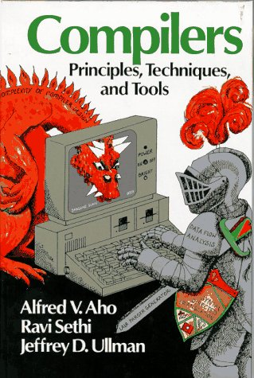

Your Own Compiler in 20 Minutes
Press T to toggle slide-show mode.
Table of Contents
1 Your Own Compiler in 20 Minutes

Alan Dipert @alandipert
2 Agenda
- What's in a compiler?
- What's Lisp?
- Lisp → Javascript compiler
3 What's a compiler?
- Compilers are functions
- Language A → Language B
- A is usually "high level"
- B is usually "low level"
- A is usually "high level"
- Examples
- Java to Java bytecode
- C to assembly
- Java to Java bytecode
- Language A → Language B
4 What's in a compiler?
- Lexical Analyzer or "lexer"
- Recognizes tokens like
printf,echo, and "hello world"
- Recognizes tokens like
- Parser
- Recognizes patterns of tokens and builds an Abstract Syntax Tree (AST)
- Recognizes patterns of tokens and builds an Abstract Syntax Tree (AST)
- Generator or "back end"
- Walks the AST and generates appropriate code in the target language
- Optionally optimizes code for size, speed, or architecture
- Walks the AST and generates appropriate code in the target language
5 Javascript Compiler Example
alert(1+2*3)
- Lexically Analyze:
alert,(,1,+,2,*,3,)identitifier<alert> arglist<number<1>, identifier<+>...
- Parse: <function call>(<arguments>…)
<function: alert>(arguments: 1, +, 2...)
- Generate:
compile(alert, compile(1), compile(+)...)PUSH 2 R1, PUSH 3 R2, * R1,R2,R3...
- Lexically Analyze:
6 The Dragon Book
- 
7 Time to Cheat!
8 What's Lisp?
- Programming language invented in 1958
- Code is data
- Symbols:
alert,*,+
- Numbers:
1,3
- List of numbers:
(1 2 3)
- Function call:
(+ 1 2 3)
- Symbols:
9 Javascript vs. Lisp
- Javascript
alert(1+2*3); //Source code string
- Lisp
(alert (+ 1 (* 2 3))) ;;Source code data
- Precedence rules unnecessary
- Compiler is passed data instead of source code strings or files
- Precedence rules unnecessary
10 JSONScript
- Javascript Object Notation (JSON) is a subset of Javascript and common data format
- We will use JSON to represent Lisp programs
- Lisp
(alert (+ 1 (* 2 3)))
- JSONScript
['alert', ['+', 1, ['*', 2, 3]]]
- Note: strings are symbols, arrays are lists
- We will use JSON to represent Lisp programs
11 Compiling JSON to JSONScript
- Write a function that converts JSONScript to a string of Javascript
- Pass the string to
eval()
- JSONScript
['alert', ['+', 1, ['*', 2, 3]]]
- Javascript
alert(1+2*3)
- Demo: http://tiny.cc/compiler
12 Thanks!
- Alan Dipert
- @alandipert
- Source for presentation: https://github.com/alandipert/barcamp2012-jsonscript
- Presentation online: http://alandipert.github.com/barcamp-2012/
- Original Blog Post: http://bit.ly/pffaCd